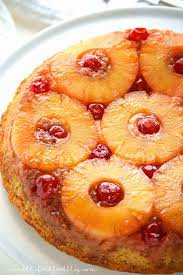

Pineapple Upside-Down Cake
Home

A great summer-y dessert, perfect on a sunny afternoon. Or try as a winter warmer with lashings of custard!
Ingredients
Serves 6
For the cake:
- 100g softened butter
- 100g caster sugar
- 100g self raising flour
- 1 tsp baking powder
- 1 tsp vanilla extract
- 2 eggs
For the topping:
- 50g softened butter
- 50g soft brown sugar
- 7 pineapple rings (reserve the syrup)
- 7 glace cherries
Method
- Heat oven to 180C/gas mark 4
- For the topping; beat the softened butter and sugar until creamy. Spread over the base and a quarter of the way up your tin. Arrange the pineapple rings on top and place the glace cherries in the centre of each ring.
- For the cake; Combine all the ingredients in a mixing bowl and beat until it reaches a soft consistency.
- Spoon the cake mixture into the tin, on top of the pineapple, and smooth it out so it's level.
- Bake for 35 mins. Once done, leave to stand for 5 mins then turn out onto a plate.